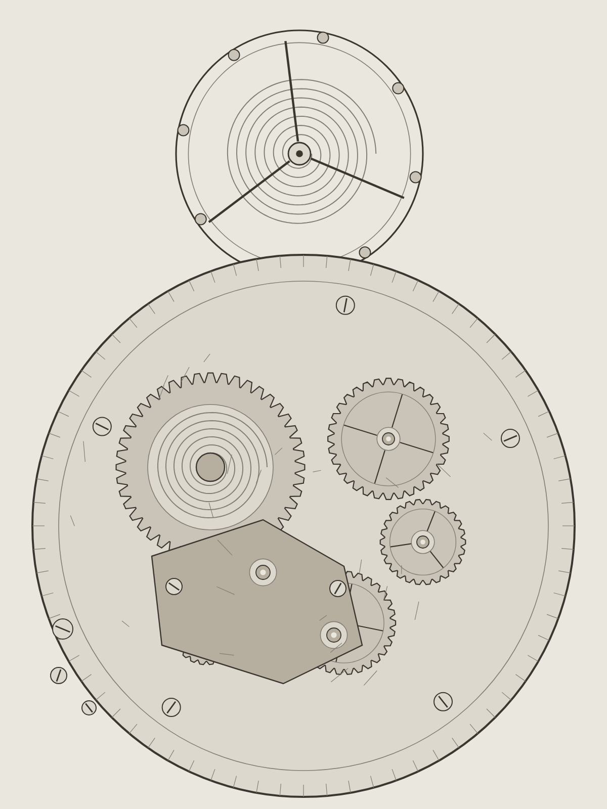
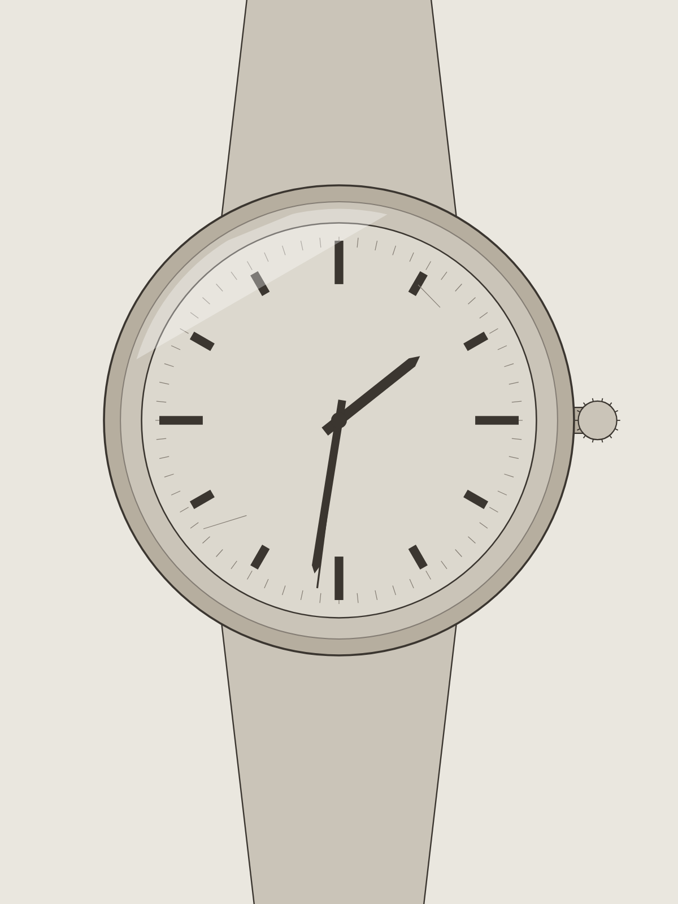
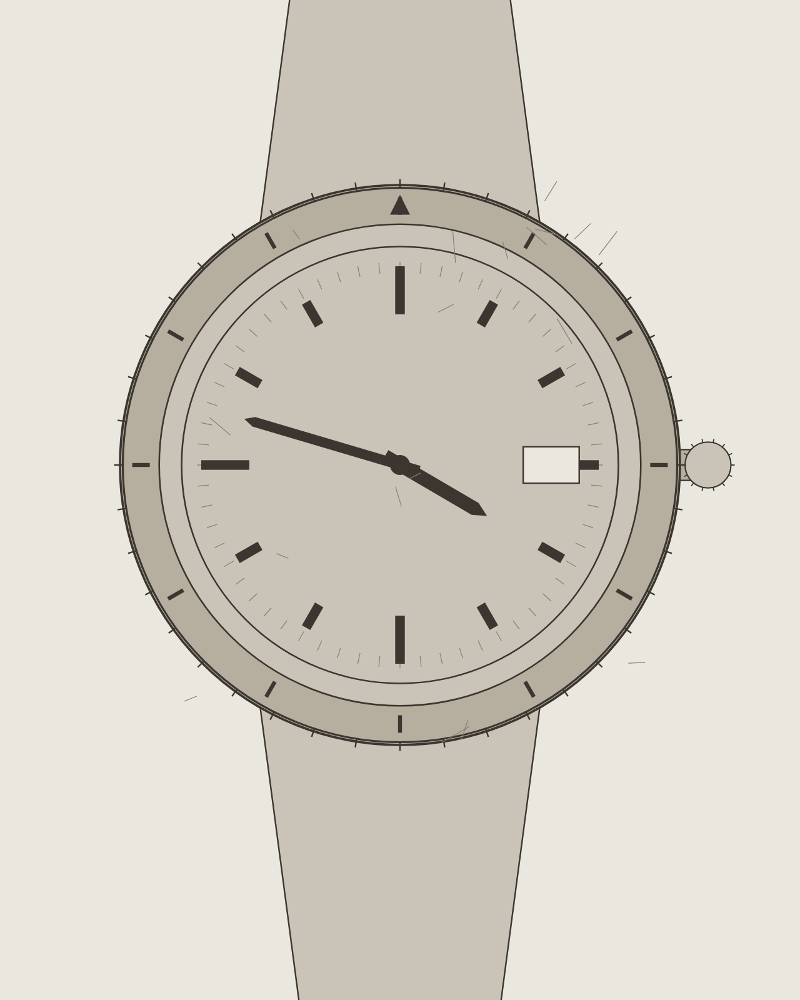
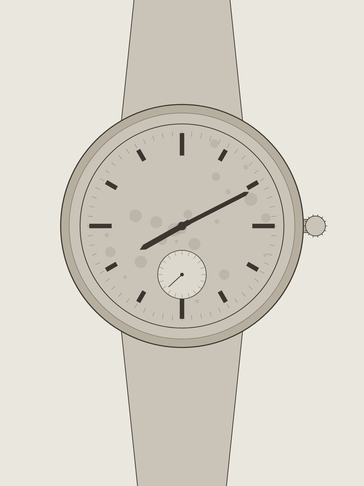
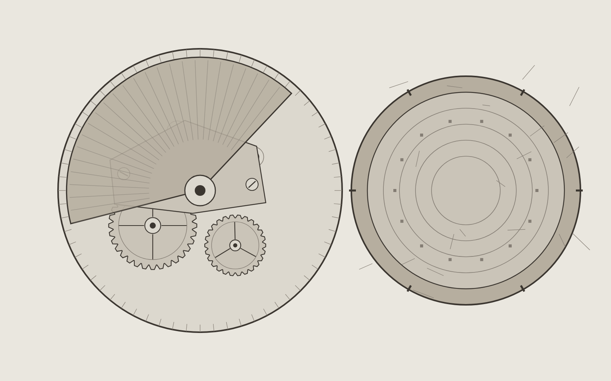
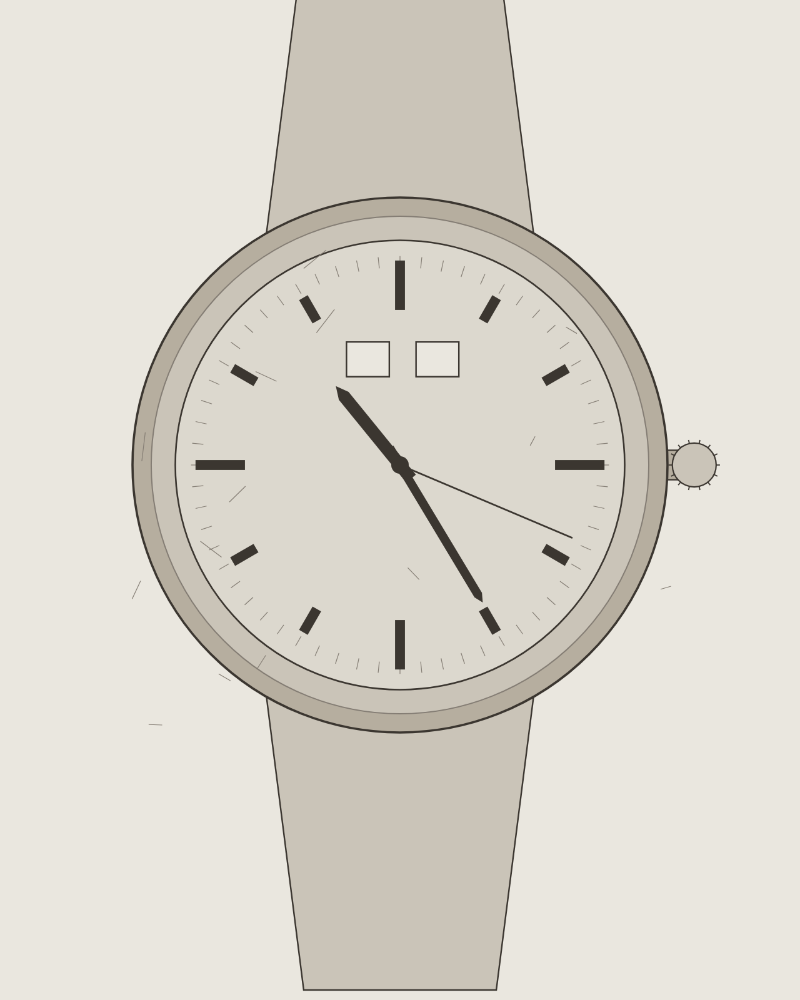
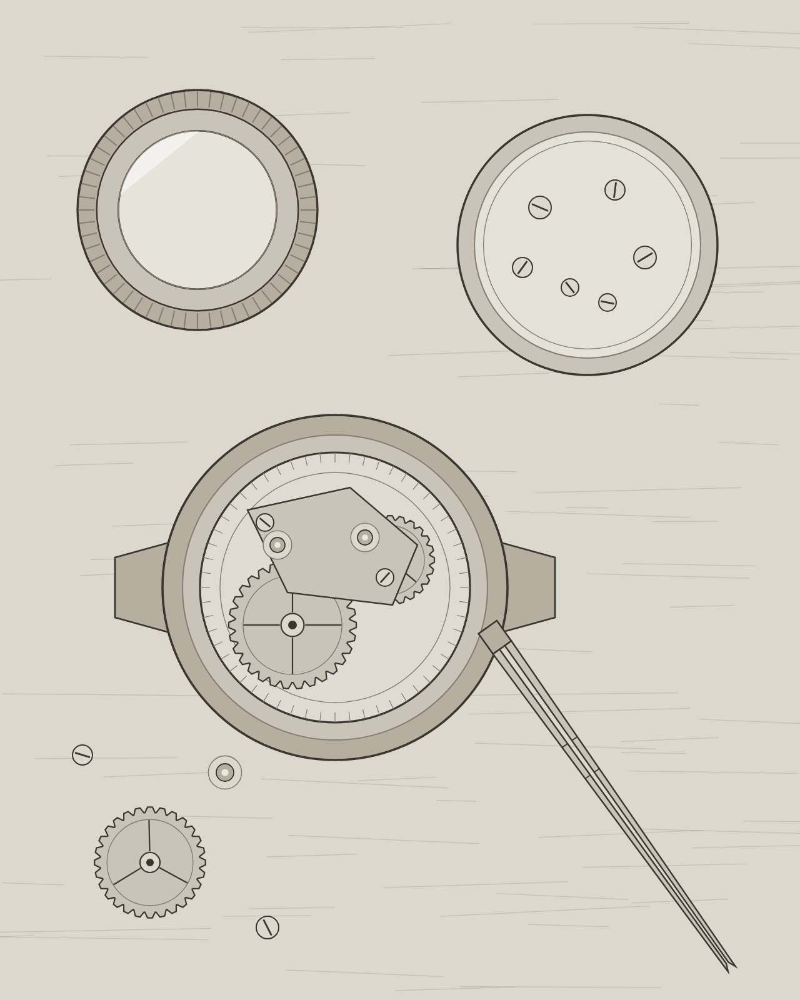

Механизм не умирает.
Он останавливается.»
Советские калибры, ГДР, Япония, старая швейцарская механика. Разбираем, моем, регулируем, отдаём с гарантией на год. Диагностика бесплатная — один-два дня.
- Берём
- Полёт, Ракета, Восток, Слава, Луч. Ruhla и Glashütte. Seiko и Citizen до двухтысячных. Швейцарию до 1990-го. Карманные — тоже, включая Мозера и Буре.
- Не берём
- Кварц, кроме батарейки. Швейцарские калибры после 1990-го — нет запчастей. Смарт-часы. Реплики: там нечего восстанавливать.
- 16 лет непрерывно, с самого открытия
- 2 400 механизмов прошло через стол
- 11 дней средний срок ремонта

Услуги
Что делаем
Всё, что ниже, — про механику. Кварц не чиним, кроме замены батарейки, и то если вы уже пришли.
-
01
Полная переборка механизма
Разбираем до последнего винта, моем в трёх ваннах, меняем масла на Moebius 9010 и 8000. Регулировка в двух положениях, прогон на таймографе пять суток.
-
02
Баланс, волосок, ось
Правим волосок вручную, если он деформирован, и ставим донорский баланс, если правка уже не помогает. Ось меняем на токарном, накатка своя.
-
03
Ультразвуковая чистка и смазка
Когда механизм живой, но встал от загустевшего масла. Три ванны: мойка, ополаскивание, сушка. Камни не трогаем, если они целы.
-
04
Стекло, циферблат, стрелки
Акрил точим и полируем сами, минерал и сапфир заказываем по размеру. Циферблат не перекрашиваем — снимаем грязь и оставляем возраст.
-
05
Корпус, заводной узел, браслет
Головка, вал, прокладки, подгонка задней крышки. Полировкой корпусов занимается Костя, мой сын, — у него это выходит ровнее, чем у меня.
Как это устроено
Процесс
Шесть шагов. Между третьим и четвёртым мы ждём вашего «да» — бывает, что неделю.
-
01
Осмотр при вас
Десять минут и лупа. Безнадёжный случай видно сразу.
-
02
Диагностика
День или два. Снимаем мосты, считаем детали.
-
03
Звонок и смета
Называю цену и срок. Дороже сметы не станет.
-
04
Мойка
Ультразвук, три ванны, сушка при 45°.
-
05
Сборка и смазка
9415 на анкер, 9010 на ход, 8200 в барабан.
-
06
Прогон и выдача
Пять суток на стенде, четыре положения.
Из недавнего
Работы
Пять из тех, что успели снять. Фотографируем не всё — чаще просто забываем, пока часы не уехали к владельцу.





Кто делает
Мастер
Один человек, один стол, один верстак у окна во двор.

Меня зовут Сергей Дорофеев. Часами занимаюсь с 1997 года: начинал подмастерьем в мастерской на Садовой, где чинили в основном «Полёты» и «Славу», потом восемь лет собирал будильники Ruhla дома на кухне. Свою мастерскую открыл в апреле 2009-го, в полуподвале на Гороховой. Сюда переехали в 2014-м, когда стало тесно.
Работаю один. По субботам приходит сын — делает корпуса и браслеты.
Швейцарские калибры после 1990 года не берём — нет запчастей, а ставить китайские аналоги в Longines я не буду. Всё, что старше, — пожалуйста: у меня четыре ящика доноров, и за шестнадцать лет там скопилось многое. На ETA 2824 и 2892 запас есть, на Poljot 3133 тоже.
Если механизм не спасти, скажу сразу и денег за диагностику не возьму. Такое бывает примерно раз в месяц. Чаще всего — вода. Реже — попытка починить самому: сорванные шлицы и погнутая ось баланса обходятся дороже, чем обычная переборка.
Сергей Дорофеев, мастер
Сколько стоит
Цены
Работа без деталей. Доноры и новые запчасти считаются отдельно, чек показываем.
| Услуга | Механика | Автоподзавод | Срок |
|---|---|---|---|
| Диагностика с разборкой | бесплатно | бесплатно | 1–2 дня |
| Полная переборка | 4 500 ₽ | 6 200 ₽ | 7–14 дней |
| Чистка и смазка | 2 400 ₽ | 3 100 ₽ | 3–5 дней |
| Замена баланса в сборе | 3 200 ₽ | 3 900 ₽ | 10–21 день |
| Правка или замена волоска | 2 800 ₽ | 3 400 ₽ | от 14 дней |
| Заводной вал и головка | 1 800 ₽ | 2 100 ₽ | 2–7 дней |
| Реверсы и ось ротора | — | 2 900 ₽ | 5–10 дней |
| Стекло акриловое, точим сами | 900 ₽ | 900 ₽ | 1 день |
| Стекло минеральное по размеру | 1 400 ₽ | 1 400 ₽ | 1–3 дня |
| Полировка корпуса | 1 800 ₽ | 1 800 ₽ | 2–4 дня |
| Подгонка браслета, замена ремешка | от 600 ₽ | от 600 ₽ | при вас |
Цены на 1 сентября 2026 года, пересматриваем раз в год. Если механизм не открывали с восьмидесятых, срок обычно уходит к верхней границе: ржавые винты выкручиваются медленно.
Гарантия — 12 месяцев на работу. Не распространяется на воду, падения и часы, которые до нас уже кто-то собирал.